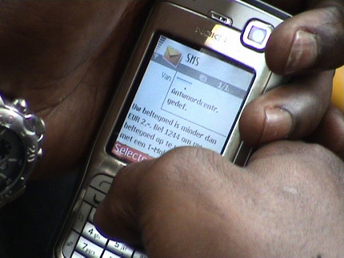

|
Roda JC - Heracles (2-1) 16 april 2006
|
Solidariteit is bij sommigen maar ene vinger lang.....
Creatief met Roda-sjaals.
Goede opkomst van Heracles-supporters.
Op west een doek met "Cziommer moet blijven".
Roda begint offensief maar zakt na al na acht minuten in waardoor hier de
eerste grote kans van Heracles ontstaat. Een bal op de lat.

Cissé heeft zich vrijgelopen op rechts en beoordeelt zijn schietkansen.
Een schot in de linkerhoek kan door doelman Pieckenhagen net niet gepakt
worden: 1-0, (27').
Vrolijkheid op de tribune en....
...ingenieuze danspasjes langs de lijn.
Reekers schoffelt Cissé van achteren neer binnen de zestien.
Scheidsrechter Haverkort geeft een strafschop die door Cziommer links
boven wordt ingeschoten: 2-0, (38').
De play-offs komen in zicht. Ook de tussenstanden bij de andere
wedstrijden zijn hier nog gunstig.

Als je elke goal door-sms't ben je zo door je tegoed heen...
Stadionverbod opgeschort, en wat doe je dan.... je leest de RodaPlay.
Hoewel Roda in de tweede helft aardig verslapte was de sfeer bij vlagen
bijzonder goed. Sinds lange tijd ging de wave weer door het stadion.
Het gelummel van Roda wordt afgestraft in de 76e min. als Tanghe mooi
voorbereidend werk van zijn ploegmaten afrondt: 1-2.
Nu is het feest in het gastenvak.
In de slotminuut scoort Tanghe bijna de gelijkmaker. Roda komt met de
schrik vrij en haalt de play-offs. Tegenstander a.s. zaterdag: Heerenveen.
Na het bedank-ritueel wordt er afscheid genomen van een aantal spelers
die vertrekken of onlangs vertrokken.
Cissé in stoeipakje mag oranje-ballen het publiek ingooien. De balletjes zijn
uitermate geschikt voor het befaamde "toppel-trappen". Uitleg over dit spel
volgt later deze week.
Het afscheid van Van Dijk, Jongen, Derksen en Colinet.
De kixe kicksen van Danniëlle.
Het was druk, feestelijk en uitermate gezellig in de Kickoff.
Vanwege een familie-actie waren er veel kinderen met hun ouders mee. Ze
beleefden een top-dag: eerst paaseieren rapen en dan winnen met Roda!
Rakkertje Jennifer.
Terug van even weggeweest en meteen een kusje van de man rechts.
Liefdevolle blik van links.
Beer-supplier Patries kreeg het behoorlijk druk want vanaf 16.30 uur was
het happy hour en was de drank voor niks!
De voltallige selectie, trainersstaf en algemeen directeur kwamen naar de
Kickoff.
Meest toegezongen man was Simon Cziommer, maar Huub willen we ook
nog een jaartje hier houden.
Volgende week sjlieps inleveren mister Sunshine!

De fotogenieke tuupen links en rechts zullen nog wel even blijven. Van
Cziommer is dat vooralsnog onduidelijk.
Berry oet Hèrkebosj met oom, en Simon natuurlijk.
In het midden de initiator van deze bijzondere vlag die speciaal bedoeld is
voor Vincent Lachambre en Ken Leemans. Jammer dat Sven vdB er niet
meer is.

Bas heeft een hooligirl ge-angelt.
Ze zijn echt wel foto-geil....
Andres Oper, hopelijk weer fit voor de play-offs.
Vanaf nu gaan jullie betalen voor elke foto!
Deze kersverse pa trekt het niet meer.
Net als je denkt dat het over is....
...breekt de polonaise uit.
Het laatste biertje.
En maar wachten op de taxi.
© Koempels Pleasure Dome
|